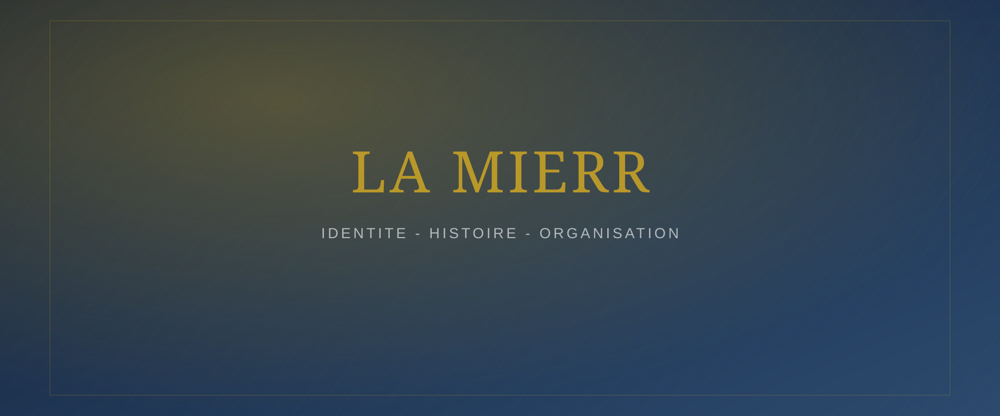

La MIERR
Identité, histoire et organisation de la Mission Internationale Évangélique de Réveil et de Restauration.
Identité de la MIERR
La Mission Internationale Évangélique de Réveil et de Restauration (MIERR) est une communauté chrétienne fondée en 2006. Elle est engagée dans l'annonce de l'Évangile, la formation des croyants, le réveil spirituel, la restauration des vies et la formation des leaders.
| Nom complet | Mission Internationale Évangélique de Réveil et de Restauration |
|---|---|
| Sigle | MIERR |
| Année de création | 2006 |
| Anniversaire | 20 ans en 2026 |
| Implantation | [Villes / pays où la MIERR est implantée] |
[La vision de la MIERR sera précisée ici — l'appel qui fonde son action et oriente son développement.]
Annoncer l'Évangile, former les croyants, œuvrer au réveil spirituel, restaurer les vies et former des leaders au service du Royaume.
[Les valeurs fondamentales de la MIERR — foi, intégrité, service, excellence, amour fraternel — seront détaillées ici.]
Historique de la MIERR
Une chronologie des grandes étapes de l'œuvre, de sa naissance à la célébration de ses 20 ans en 2026.

Naissance de l'œuvre
[Récit de la création de la MIERR : contexte, fondateurs, premiers pas de la communauté.]

Développement de l'église
[Croissance de la communauté, implantation de nouvelles antennes, développement des activités.]

Création des départements
[Mise en place des départements SEMIC, JEMOC, SEMIFIG et des sections de l'église.]

Création des structures de formation
[Ouverture de l'Institut biblique de formation pastorale de Sion et développement de la presse.]

Principales étapes de l'expansion
[Nouvelles antennes, conventions majeures, rayonnement national et international de la MIERR.]

Célébration des 20 ans de la MIERR
[Programme et temps forts de la célébration du 20ᵉ anniversaire de la MIERR en 2026.]
Organisation de la MIERR
La MIERR s'appuie sur une organisation à trois niveaux, garante de la cohérence de sa vision et de la qualité de son accompagnement.
Les garants de la vision
Ce niveau est chargé de veiller à la préservation et à la transmission de la vision de la MIERR à travers le temps et les générations de responsables. [Noms et présentation à compléter.]
La pastorale / Conseil pastoral
Les responsables pastoraux assurent la conduite spirituelle de l'église : enseignement, accompagnement des membres et supervision des départements. [Liste des responsables pastoraux, fonctions et responsabilités à compléter.]
Les leaders et responsables
Les leaders, responsables des départements, des sections et des différents services assurent le fonctionnement quotidien et la mise en œuvre des activités de la MIERR. [Liste et présentation à compléter.]
Galerie historique
Parcourez l'histoire de la MIERR en images, des débuts en 2006 à la célébration des 20 ans en 2026.